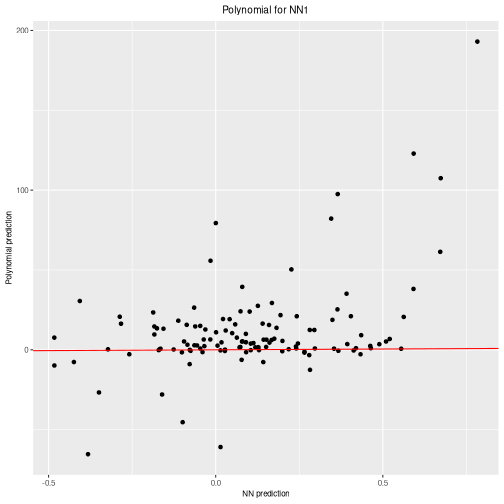

02 - Constraining the weights in the NN
Pablo Morala
2023-06-20
nn2poly-02-constraints.RmdThis vignette’s goal
The goal of this vignette is to present how to impose the needed
constraints on the NN training so nn2poly can give accurate
approximations of the NN. Therefore, this is a replication of
vignette("nn2poly-01-introduction") steps, but imposing
those constraints. Please refer to that introduction vignette to
understand nn2poly basics and expand on the details that will be omitted
here.
The initial setup will be the same, using kerasand
tensorflow to create and train the NN. Additionally, we
will now use the auxiliary package nn2poly.tools that
implements some helper functions to impose the desired constraints on
the NN.
library(nn2poly.tools)
library(nn2poly)
library(keras)
library(tensorflow)
# For reproducibility
set.seed(1)
tensorflow::tf$random$set_seed(1)We will solve again two simple examples, regression and classification.
Simple regression example
Simulated data generation
We will simulate polynomial data from the following polynomial: \(4x_1 - 3 x_2x_3\). Data will needs to be scaled to the \([-1,1]\) interval.
# Define the desired polynomial for the simulated data
polynomial <- list()
polynomial$labels <- list(c(1), c(2,3))
polynomial$values <- c(4,-3)
# Define number of variables p and sample n
p <- 3
n_sample <- 500
# Predictor variables
X <- matrix(0,n_sample,p)
for (i in 1:p){
X[,i] <- rnorm(n = n_sample,0,1)
}
# Response variable + small error term
Y <- as.vector(eval_poly(X,polynomial)) + stats::rnorm(n_sample, 0, 0.1)
# Store all as a data frame
data <- as.data.frame(cbind(X, Y))
head(data)
#> V1 V2 V3 Y
#> 1 -0.6264538 0.07730312 1.13496509 -2.684020
#> 2 0.1836433 -0.29686864 1.11193185 1.632335
#> 3 -0.8356286 -1.18324224 -0.87077763 -6.344179
#> 4 1.5952808 0.01129269 0.21073159 6.279883
#> 5 0.3295078 0.99160104 0.06939565 1.165488
#> 6 -0.8204684 1.59396745 -1.66264885 4.650553
# Data scaling
maxs <- apply(data, 2, max)
mins <- apply(data, 2, min)
data <- as.data.frame(scale(data, center = mins + (maxs - mins) / 2, scale = (maxs - mins) / 2))
# Divide in train (0.75) and test (0.25)
index <- sample(1:nrow(data), round(0.75 * nrow(data)))
train <- data[index, ]
test <- data[-index, ]
train_x <- as.matrix(train[,-(p+1)])
train_y <- as.matrix(train[,(p+1)])
test_x <- as.matrix(test[,-(p+1)])
test_y <- as.matrix(test[,(p+1)])Original neural network (with constraints)
In this case, we need to use the custom layers from
nn2poly.tools that include constraints. These constraints
are different from the usual constraints in keras because
in this case the restriction is applied to both the weight vector and
the bias at each neuron at the same time, while usual keras
constraints can only be employed on either the bias or the kernel
weights.
Here we will use the L1 norm, checking that each vector of weights +
bias arriving to a neuron satisfy that their L1 norm is equal or less
than 1. This is created using the function
build_keras_model() which requires: - The input dimension
p. - A list with the activation functions at each layer
af_string_list. - A list with the number of neurons at each
layer h_neurons_vector. - A list my_max_norm
consisting of two elements: the type of norm used (l1_norm
in this case) and the maximum value (1 in this case).
We can define all these parameters as well as the ones used by
keras:
# keras hyperparameters
my_loss <- "mse"
my_metrics <- "mse"
my_optimizer <- optimizer_adam()
my_epochs <- 2000
my_validation_split <- 0.2
my_verbose <- 0
# Parameters:
af_string_list <- list("tanh", "tanh", "linear")
h_neurons_vector <- c(50, 50, 1) # If the output is linear, the last value should be 1
my_max_norm <- list("l1_norm",1)Build the model with the custom constraints, then compile and fit the model:
nn <- build_keras_model(p,
af_string_list,
h_neurons_vector,
my_max_norm)
# Compile the model
compile(nn,
loss = my_loss,
optimizer = my_optimizer,
metrics = my_metrics
)
# Fit the model
history <- fit(nn,
train_x,
train_y,
verbose = my_verbose,
epochs = my_epochs,
validation_split = my_validation_split,
batch_size = 50
)
nn
#> Model: "sequential_16"
#> __________________________________________________________________________________________________________________________
#> Layer (type) Output Shape Param #
#> ==========================================================================================================================
#> layer__combined_l1_4 (Layer_Combined_L1) (None, 50) 200
#> activation_4 (Activation) (None, 50) 0
#> layer__combined_l1_5 (Layer_Combined_L1) (None, 50) 2550
#> activation_5 (Activation) (None, 50) 0
#> dense_20 (Dense) (None, 1) 51
#> ==========================================================================================================================
#> Total params: 2,801
#> Trainable params: 2,801
#> Non-trainable params: 0
#> __________________________________________________________________________________________________________________________We can visualize the training process:
plot(history)And we can also visualize the NN predictions vs the original Y values.
# Obtain the predicted values with the NN to compare them
prediction_NN <- predict(nn, test_x)
# Diagonal plot implemented in the package to quickly visualize and compare predictions
plot_diagonal(x_axis = prediction_NN, y_axis = test_y, xlab = "NN prediction", ylab = "Original Y")Using nn2poly to obtain the polynomial
After the NN has been trained (in this case with constraints) we
extract and reshape the weights and NN parameters as explained in
vignette("nn2poly-01-introduction"), with the only
difference that the keras weights from the custom layers have a slightly
different behavior as they already include the bias in the weights
matrix:
keras_weights <- keras::get_weights(nn)
n <- length(keras_weights)
nn_weights <- keras_weights[1:(n-2)]
# Add last layer as this one has the bias separated, it is not a custom layer
nn_weights[[n-1]] <- rbind(keras_weights[[n]], keras_weights[[n-1]])The activation functions that we used can be stored as:
af_string_list <- list("tanh","tanh", "linear")And finally the order of the Taylor approximation that we are going
to choose is 8 at each hidden layer. (The final polynomial order will be
limited by forced_max_Q=3)
q_taylor_vector <- c(8, 8, 1)When the input is in the desired shape, the nn2poly method can be applied:
final_poly <- nn2poly_algorithm(
weights_list = nn_weights,
af_string_list = af_string_list,
q_taylor_vector = q_taylor_vector,
store_coeffs = FALSE,
forced_max_Q = 3
)Visualizing the results
- Diagonal plot. In this example, as we have imposed weight constraints the approximation is better.
plot_diagonal(x_axis = prediction_NN, y_axis = prediction_poly, xlab = "NN prediction", ylab = "Polynomial prediction")
- Representing the activation potentials, it can be seen that now they are centered around zero, where nn2poly works best.
plot_taylor_and_activation_potentials(data = train,
weights_list = nn_weights,
af_string_list = af_string_list,
q_taylor_vector = q_taylor_vector,
forced_max_Q = 3,
my_max_norm = my_max_norm)
#> [[1]]
#>
#> [[2]]
#>
#> [[3]]
Simple classification example
In this example, instead of a regression problem we will show a
classification example, where a NN will be trained to classify species
with the iris dataset, and then nn2poly will be employed to
obtain a polynomial for each species.
Data preparation
We will load the iris and scale the data:
# Load the data
data(iris)
# Change response to numeric. In this case, Species was already numeric,
# but this step is needed if it is a factor variable.
iris$Species <- as.numeric(iris$Species)
# Define dimension p (number of predictor variables)
p <- dim(iris)[2] - 1
# Define objective classes
n_class <- max(iris[,(p+1)])
# Move objective classes from (1:3) to (0:2), needed for tensorflow
iris[,(p+1)] <- iris[,(p+1)] - 1
# Scale the data in the [-1,1] interval and separate train and test
# Only the predictor variables are scaled, not the response as those will be
# the different classes.
iris_x <- iris[,-(p+1)]
maxs <- apply(iris_x, 2, max)
mins <- apply(iris_x, 2, min)
data_x_scaled <- as.data.frame(scale(iris_x, center = mins + (maxs - mins) / 2, scale = (maxs - mins) / 2))
data <- cbind(data_x_scaled, iris[,(p+1)])
# Divide in train (0.75) and test (0.25)
index <- sample(1:nrow(data), round(0.75 * nrow(data)))
train <- data[index, ]
test <- data[-index, ]
train_x <- as.matrix(train[,-(p+1)])
train_y <- as.matrix(train[,(p+1)])
test_x <- as.matrix(test[,-(p+1)])
test_y <- as.matrix(test[,(p+1)])Original neural network
We can now train the NN, following the same procedure as in the
regression problem and using the build_keras_model function
which includes the layers with custom constrains.
First we define the parameters and keras hyperparameters:
# keras hyperparameters
my_loss <- loss_sparse_categorical_crossentropy(from_logits = TRUE)
my_metrics <- "accuracy"
my_optimizer <- optimizer_adam()
my_epochs <- 500
my_validation_split <- 0.2
my_verbose <- 0
# Parameters:
af_string_list <- list("tanh", "tanh", "linear")
h_neurons_vector <- c(50, 50, n_class)
my_max_norm <- list("l1_norm",1)Build the model with the custom constraints, then compile and fit the model:
nn <- build_keras_model(p,
af_string_list,
h_neurons_vector,
my_max_norm)
# Compile the model
compile(nn,
loss = my_loss,
optimizer = my_optimizer,
metrics = my_metrics
)
# Fit the model
history <- fit(nn,
train_x,
train_y,
verbose = my_verbose,
epochs = my_epochs,
validation_split = my_validation_split,
batch_size = 50
)
nn
#> Model: "sequential_17"
#> __________________________________________________________________________________________________________________________
#> Layer (type) Output Shape Param #
#> ==========================================================================================================================
#> layer__combined_l1_6 (Layer_Combined_L1) (None, 50) 250
#> activation_6 (Activation) (None, 50) 0
#> layer__combined_l1_7 (Layer_Combined_L1) (None, 50) 2550
#> activation_7 (Activation) (None, 50) 0
#> dense_21 (Dense) (None, 3) 153
#> ==========================================================================================================================
#> Total params: 2,953
#> Trainable params: 2,953
#> Non-trainable params: 0
#> __________________________________________________________________________________________________________________________We can visualize the training process:
plot(history)In this case, to asses the NN accuracy we have to transform the nn output into a probability:
probability_model <- keras_model_sequential() %>%
nn() %>%
layer_activation_softmax() %>%
layer_lambda(k_argmax)And predict the results for the test data:
# Obtain the predicted classes with the NN to compare them
prediction_NN_class <- predict(probability_model, test_x)
# Also, the linear output can be predicted before the probability model
prediction_NN <- predict(nn, test_x)We can use here a confusion matrix to visualize the results, where we can see that the NN correctly predicts the classes of each observation:
# Create a confusion matrix
cm <- caret::confusionMatrix(as.factor(prediction_NN_class), as.factor(test_y))
cm
#> Confusion Matrix and Statistics
#>
#> Reference
#> Prediction 0 1 2
#> 0 15 0 0
#> 1 0 11 0
#> 2 0 0 12
#>
#> Overall Statistics
#>
#> Accuracy : 1
#> 95% CI : (0.9075, 1)
#> No Information Rate : 0.3947
#> P-Value [Acc > NIR] : 4.568e-16
#>
#> Kappa : 1
#>
#> Mcnemar's Test P-Value : NA
#>
#> Statistics by Class:
#>
#> Class: 0 Class: 1 Class: 2
#> Sensitivity 1.0000 1.0000 1.0000
#> Specificity 1.0000 1.0000 1.0000
#> Pos Pred Value 1.0000 1.0000 1.0000
#> Neg Pred Value 1.0000 1.0000 1.0000
#> Prevalence 0.3947 0.2895 0.3158
#> Detection Rate 0.3947 0.2895 0.3158
#> Detection Prevalence 0.3947 0.2895 0.3158
#> Balanced Accuracy 1.0000 1.0000 1.0000Using nn2poly to obtain the polynomial
After the NN has been trained, we need to extract and reshape the parameters as explained in the regression case:
keras_weights <- keras::get_weights(nn)
n <- length(keras_weights)
nn_weights <- keras_weights[1:(n-2)]
# Add last layer as this one has the bias separated, it is not a custom layer
nn_weights[[n-1]] <- rbind(keras_weights[[n]], keras_weights[[n-1]])The activation functions that we used can be stored as:
af_string_list <- list("tanh","tanh", "linear")And finally the order of the Taylor approximation that we are going
to choose is 8 at each hidden layer. (The final polynomial order will be
limited by forced_max_Q=3)
q_taylor_vector <- c(8, 8, 1)When the input is in the desired shape, the nn2poly method can be applied:
final_poly <- nn2poly_algorithm(
weights_list = nn_weights,
af_string_list = af_string_list,
q_taylor_vector = q_taylor_vector,
store_coeffs = FALSE,
forced_max_Q = 3
)Obtaining polynomial predictions
# Obtain the predicted values for the test data with our Polynomial Regression
prediction_poly_matrix <- eval_poly(x = test_x, poly = final_poly)
# Define probability model with keras fro the polynomial outputs
probability_poly <- keras_model_sequential() %>%
layer_activation_softmax() %>%
layer_lambda(k_argmax)
# Class prediction with the polynomial outputs (one row for each polynomial)
prediction_poly_class <- predict(probability_poly,t(prediction_poly_matrix))Visualising the results
# Confussion matrix between NN class prediction and polynomial class prediction
cm <- caret::confusionMatrix(as.factor(prediction_NN_class), as.factor(prediction_poly_class))
cm
#> Confusion Matrix and Statistics
#>
#> Reference
#> Prediction 0 1 2
#> 0 15 0 0
#> 1 0 11 0
#> 2 0 0 12
#>
#> Overall Statistics
#>
#> Accuracy : 1
#> 95% CI : (0.9075, 1)
#> No Information Rate : 0.3947
#> P-Value [Acc > NIR] : 4.568e-16
#>
#> Kappa : 1
#>
#> Mcnemar's Test P-Value : NA
#>
#> Statistics by Class:
#>
#> Class: 0 Class: 1 Class: 2
#> Sensitivity 1.0000 1.0000 1.0000
#> Specificity 1.0000 1.0000 1.0000
#> Pos Pred Value 1.0000 1.0000 1.0000
#> Neg Pred Value 1.0000 1.0000 1.0000
#> Prevalence 0.3947 0.2895 0.3158
#> Detection Rate 0.3947 0.2895 0.3158
#> Detection Prevalence 0.3947 0.2895 0.3158
#> Balanced Accuracy 1.0000 1.0000 1.0000We can compare, for each polynomial, its output with the the linear
output of the NN. In this case, as constraints have been used in
training, the results are much closer than what happened in
vignette("nn2poly-01-introduction")
for (i in 1:3){
print(
plot_diagonal(x_axis = prediction_NN[,i],
y_axis = prediction_poly_matrix[i,],
xlab = "NN prediction",
ylab = "Polynomial prediction")
)
}Finally, activation potentials can be visualized as follows, where it can be seen that the constraints have made the activations to be closer to zero than in the unrestricted case. However, there is still some dispersion in them that creates the slight deviations seen in the diagonal plots. However, the
plot_taylor_and_activation_potentials(data = train,
weights_list = nn_weights,
af_string_list = af_string_list,
q_taylor_vector = q_taylor_vector,
forced_max_Q = 3,
my_max_norm = my_max_norm)
#> [[1]]#>
#> [[2]]#>
#> [[3]]